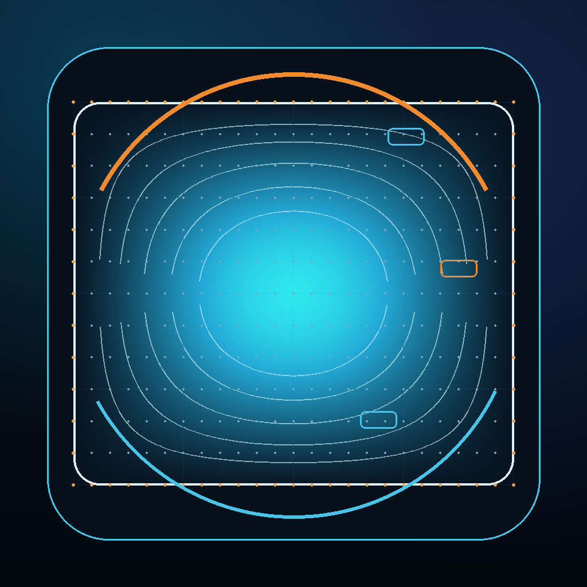
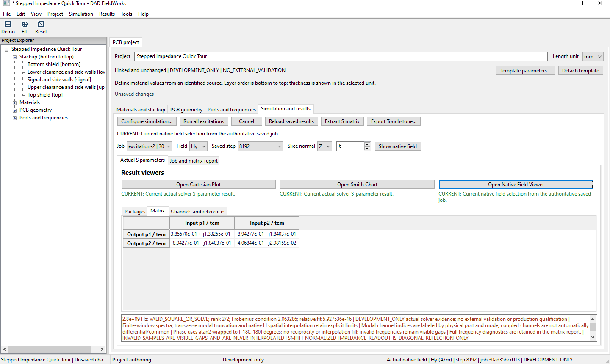
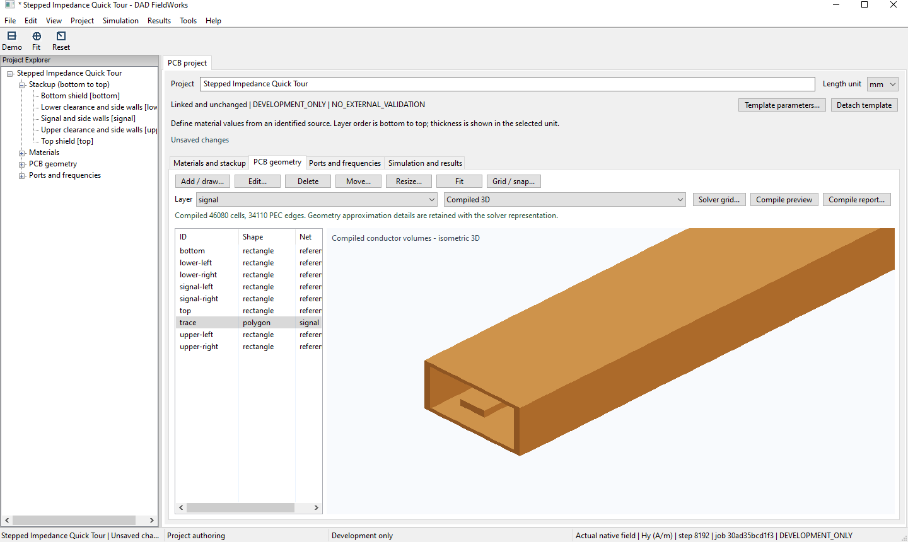
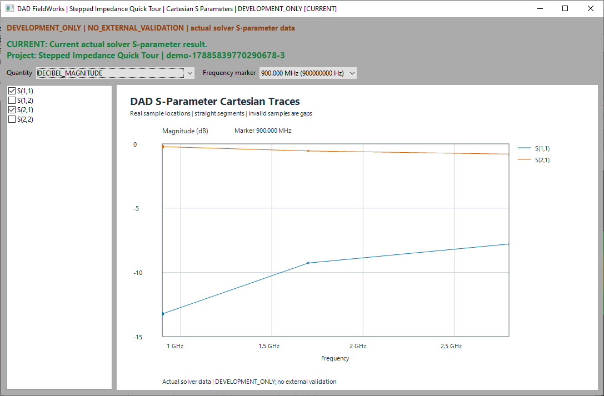
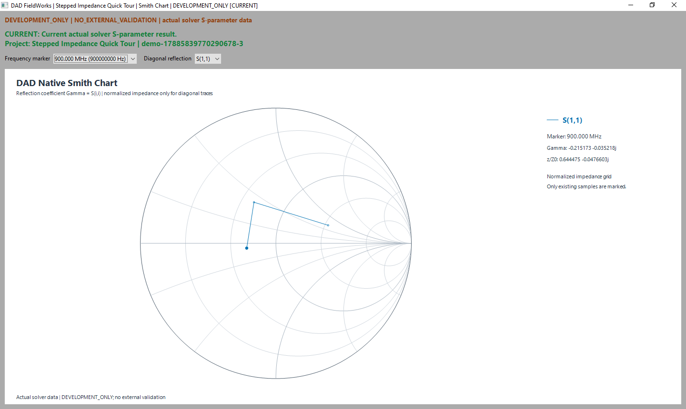
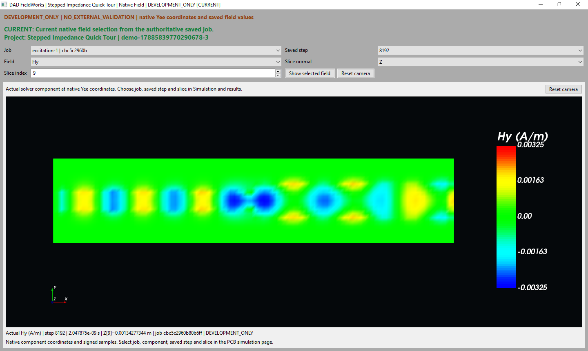

How much is reflected or transmitted?
Inspect reflection and transmission terms to understand a discontinuity's response. Compare their magnitudes in the Cartesian plots and their complex values in the matrix.

DAD FieldWorksElectromagnetic simulation for PCB & RF
DAD FieldWorks is a Windows application for RF and PCB engineers. Model supported structures, calculate their response and inspect S parameters and field distributions within the same project.
Development preview. External validation is not yet complete. Not released for production use.
Application screenshots · September 2026

Questions behind the layout
For RF, microwave, signal integrity and PCB engineers investigating supported structures. Begin with the response you need to understand.
Inspect reflection and transmission terms to understand a discontinuity's response. Compare their magnitudes in the Cartesian plots and their complex values in the matrix.
Follow input reflection over the calculated frequencies on a Smith chart. Read normalized impedance at a selected sample to examine the match.
Adjust supported dimensions, such as conductor width or spacing, and rerun the calculation. Inspect the new response to investigate the effect of that change.
Inspect electric or magnetic field components on a saved slice. Locate regions of stronger field and examine their spatial distribution within the structure.
From model to result
Geometry, simulation settings and results remain connected within one project. You can inspect the structure used for a calculation alongside its response.
Define materials, stackup, geometry, ports and frequencies. Inspect the model before using it for a calculation.
Run the configured electromagnetic simulation to obtain field and port results within the supported development scope.
Examine the complex matrix, frequency traces, Smith chart and saved fields. Choose the view that helps answer your engineering question.
Before the simulation
Compare the editable model with the geometry used by the solver. Review the grid and geometry approximations before interpreting a result.
Shown here: Stepped Impedance Quick Tour.

Inspect the results
Open plots and field views in separate, resizable windows while keeping the project in view. Each presents a different aspect of the calculated response.




Editable examples
Use a defined structure as a starting point. Change its parameters to regenerate the geometry, then calculate the new response.
Relevant changes mark earlier results stale. These examples are development cases, not externally validated benchmarks. The screenshots show the Stepped Impedance Quick Tour.
Project materials
Start with built-in ideal definitions or create your own material entries. Project snapshots prevent later library edits from silently changing an existing model.
The current preview supports PEC and scalar, isotropic, nondispersive, lossless dielectrics. The library is not a manufacturer database.
Working with saved results
Relevant changes to geometry, materials, ports, frequencies or simulation settings mark earlier results stale. Export is blocked so old results cannot be passed on as current.
Save the project with result references and viewer selections. Reopen matching results without recalculating when their saved job data is available.
Export complete, valid results as Touchstone within the supported single-terminal TEM or quasi-TEM subset. Multimode datasets are excluded; the capability notes specify the reference-impedance requirements.
Development status
The application supports a defined range of structures, materials and port configurations. It is not intended for production sign-off. This site does not offer a software download.
Development preview. External validation is not yet complete. Not released for production use.
DigitalArtDeco Labs
Have a structure you would like to investigate? Contact DigitalArtDeco Labs UG (haftungsbeschränkt) to discuss a technical use case, geometry family or validation case.